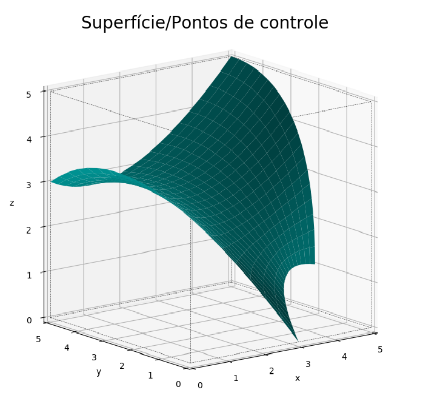

Docstring¶
O usuário recebe nessa página todas informações dos argumentos de todas as funções presentes no código.
-
creating_solid.berstein(n_p)¶ Matemática chave por trás das curvas/superfícies de Bézier, dentro da própria função
gen_bezier_surface().- Parameters
n_p (
int) – Não há necessidade alguma de manipulação por parte do usuário.
-
creating_solid.bounds_into_single_solid(identif_list, identif, solid_raf_path=False)¶ Função que agrega diversas features em apenas um sólido. Se faz necessário na hora de realizar um mirror atrelado a um
'target'.- Parameters
identif_list (
list,strs) – Lista dos identificadores das features que farão parte do sólido:['0','3','2'], por exemplo.identif (
str) – Crie a identificação da feature com \({n}\), onde \({n=0,1,2,3...}\).solid_raf_path (
Bool, optional) – Sete comoTruepara criar as informações para o refinamento de malha. Ideal para o final do projeto, no qual todas as features já estão definidas.
-
creating_solid.create_point_matrix(deflection=False)¶ Auxílio na hora de setar os pontos necessários para as equações da função
gen_bezier_surface().- Parameters
deflection (
Bool, optional) – Sete comoTruecaso queira que a superfície passe necessariamente pelos pontos de controle (pontos intermediários, os que normalmente dão a curvatura suave à superfície). Baseia-se num artifício matemático que hackeia a Bézier, forçando-a a fazer algo que normalmente não faria.
Warning
deflection=Truenão demonstrará efeito em todos os casos!O parâmetro pode ficar setado como True sem danificar o código, porém só efetivamente desviará a superfície caso
num_u_points = 3ao mesmo tempo quenum_v_points = 2ou vice-versa.O porquê da restrição:
Como pode-se imaginar, não há necessidade de desviar a superfície para passar em pontos intermediários caso existam apenas 2 pontos nas direççoes \({u}\) e \({v}\) pois não há pontos intermediários. Também, caso a superfície tenha 3 pontos em cada direção \({u}\) e \({v}\) ou mais, torna-se matematicamente complicado descrever o desvio.
-
creating_solid.epsi_plot(direction, grid=True, ticks='full', integral=False, raf='normal')¶ Confira se os limites estão corretos, camada por camada ou por amostragem, em qualquer direção.
- Parameters
direction (
str) – Poderá assumir os seguintes valores:'x','y'ou'z'.grid (
Bool, optional) – Caso houver número demasiado de nós (>250), setar comoFalseauxiliará na visualização.ticks (
str, optional) – Definição dos ticks da imagem (números que acompanham os eixos). Pode assumirfull(ideal para poucos nós),some(ideal para número alto de nós),none(imagem limpa).integral (
Bool, optional) – Se o usuário quiser conferir meticulosamente todas as camadas, sete comoTrue.raf (
str, optional) – Se o usuário quiser conferir alguma \({\epsilon}\) refinada, setar com'x','y'ou'z'.
-
creating_solid.gen_bezier_surface(identif, name, show_equation=False)¶ As equações de Bézier são governadas pelos parâmetros \({u}\) e \({v}\) e fornecem leis para curvas/superfícies.
São definidas por pontos arbitrados pelo usuário, tendo um mínimo de 2 em cada direção \({u}\) e \({v}\) e sem algum máximo pré-determinado.
Os pontos iniciais e finais determinam onde a curva começa e termina. São os únicos pontos por onde a Bézier (naturalmente) passará com certeza. Os pontos intermediários estão encarregados de fornecer à Bézier uma curvatura suave, sem canto vivo/descontinuidade, portanto a curva/superfície nunca encosta neles (para burlar essa situação, veja a função
create_point_matrix()).O grau das equações é definido por número de pontos definidos pelo usuário - 1.
- Parameters
identif (
str) – Crie a identificação da feature com \({n}\), onde \({n=0,1,2,3...}\) (começar em'0'e somar'1'a cada nova superfície).name (
str) – Crie um name para a superfície. Não há regras.show_equations (
Bool, optional) – Sete comoTruecaso queira visualizar as equações governantes da superfície em questão.
Warning
identif()necessita atenção especial: o usuário voltará a chamar o parâmetro por diversas vezes ao decorrer do código.É importante frisar que, caso construída uma superfície muito complexa (com variações não lineares entre os pontos em mais de 2 direções \({xyz}\), uma superfície muito torcida), a convergência das equações não é garantida.
A superfície ao lado possui seguintes equações:
x(𝑢,𝑣) = 4𝑢²−2𝑢+𝑣²(3𝑢2−6𝑢+3)+𝑣(−6𝑢²+12𝑢−6)+3 y(𝑢,𝑣) = 2𝑢²+𝑣²(2𝑢²+1)+𝑣(4−4𝑢²) z(𝑢,𝑣) = −3𝑢²+4𝑢+𝑣²(−11𝑢²+14𝑢−7)+𝑣(18𝑢²−20𝑢+10)
Evidentemente, são equações longas, não lineares e dependentes de mais de uma variável. O solver não se dá muito bem com isso. O usuário pode tentar a sorte, simplificar a superfície ou tentar outro tipo de solver na hora de gerar a matriz \({\epsilon}\) na função
gen_epsi_bezier_surface().
{kind=link}
-
creating_solid.gen_cylinder(identif, name, bases_plane, radius, center_1, center_2, init_height, final_height)¶ Crie um cilíndro ao longo de \({x}\), \({y}\) ou \({z}\) em qualquer ponto do domínio. Não há possibilidade de rotações.
- Parameters
identif (
str) – Crie a identificação da feature com \({n}\), onde \({n=0,1,2,3...}\) (começar em'0'e somar'1'a cada nova superfície).name (
str) – Crie um nome para a feature. Não há regras.bases_plane (
str) – O plano transversal ao cilindro: onde a base ou o topo ficam (são paralelos). Deverá assumir'xy','xz'ou'zy'.radius (
float) – Raio da base/topo.center1 (
float) – 1ª coordenada do centro da base/topo. O eixo correspondende à coordenada dependerá de qualbases_planefoi definido.center2 (
float) – 2ª coordenada do centro da base/topo. O eixo correspondende à coordenada dependerá de qualbases_planefoi definido.init_height (
float) – Início do cilindro. Deve ser menor do quefinal_height.final_height (
float) – Final do cilindro. Deve ser maior do queinit_height.
-
creating_solid.gen_epsi_bezier_surface(surface_type, plane, identif, solver='scipy', add_or_sub='sub', interval=numpy.arange, bez_raf_path=False)¶ Nesta função, usa-se as equações geradas pelos pontos fornecidos pelo usuário para setar os limites de onde é sólido (na \({\epsilon}\),
1) e onde não é sólido (na \({\epsilon}\),0). Também se seta o que é considerado entrada e saída, ou ambos.- Parameters
surface_type (
str) –Defina se a superfície em questão é considerada uma entrada, uma saída ou ambos em relação ao domínio.
tipo de limite da superfície
Setar
surface_typecomoentrada
'entry+exit and/or entry'saída
'entry+exit and/or exit'entrada e saída simult.
ambos, tanto faz
entrada e saída simult. + entrada
'entry+exit and/or entry'entrada e saída simult. + saída
'entry+exit and/or exit'plane (
str) – Escolha o melhor plane para resolver sua superfície. Pode assumir apenas'xz','xy'ou'zy'. Uma superfície sem espessura em relação a um plano não pode ser resolvida por esse plano.identif (
str) – Repita o argumentoidentifda superfície em questão.solver (
str, optional) – Deve assumir'scipy'or'sympy'. Normalmente'scipy'é mais eficiente e barato.add_or_sub (
str) – Defina o mecanismo de criação da \({\epsilon}\). Caso assuma'add', o fluxo de informação da superfície para a \({\epsilon}\) será através de adição (ou subtração, caso seja umaentry/exit and/or exit), caso ideal para obtenção de intersecções (não esquecer de usar a funçãonormalize_epsi()para correção). Caso assuma'sub', o fluxo será através de substituição (metodologia padrão).interval (
list, np.arange, optional) – Intervalo no qual o solver'scipy'vai buscar as raízes. O padrão é o que apresenta melhores resultados.bez_raf_path (
Bool, optional) – Sete comoTruepara criar as informações para o refinamento de malha. Ideal para o final do projeto, no qual todas as features já estão definidas.
- Exemplo:
-
Podemos notar 2 supefícies na figura, uma verde,
identif='0', e outra roxaidentif='1'. De acordo com esta situação, a invocação da funçãogen_epsi()pode se dar na seguinte forma:gen_epsi('entry+exit and/or entry','zy','0') gen_epsi('entry+exit and/or exit','zy','1')
Podemos notar também um ponto que é o início de um vetor perpendicular ao plane \({zy}\). Este vetor é a representação do que define o
surface_typede cada superfície. Toda vez que o vetor encontrar alguma superfícies, será definido um limite para a criação da \({\epsilon}\). Devemos imaginar que para cada combinação de coordenada \({z}\) e \({y}\) (espaçamento definido por \({dz}\) e \({dy}\)) um vetor desses é originado. Portanto:1. O sólido verde é considerado somente entrada pois, no instante em que é interceptado pelos vetores, entra-se no sólido.
2. O sólido roxo deve ser dividido em 2 partes e é considerado entrada e sáida + saída. A primeira parte é a superior, logo acima da superfície verde. Toda esta parte será interceptada pelos vetores duas vezes e por isso é considerada entrada e saída. A segunda parte é a inferior, que ‘compartilha’ altura com a superfície verde. Esta parte será interceptada pelos vetores apenas uma vez e em todas elas o sólido já terá acabado, por isso é considerada como saída.
Warning
Caso construída uma superfície que possua segmentos com possíveis entradas e saídas simultâneas (superfície roxa), certificar que a superfície seja construída no sentido positivo: os pontos iniciais devem ser mais próximos da origem do que os pontos finais, independente do plane.
{kind=link}
-
creating_solid.gen_epsi_cylinder(identif, surface_type, add_or_sub='sub', cyl_raf_path=False)¶ Geração da \({\epsilon}\) da esfera criada anteriormente.
- Parameters
identif (
str) – Repita o argumentoidentifdo cilindro em questão.surface_type (
str) – Defina se o cilindro será um objeto (adição de “material”) ou um contorno (subtração de “material”) . Deve assumir'solid'ou'contour'.add_or_sub (
str) – Defina o mecanismo de criação da \({\epsilon}\). Caso assuma'add', o fluxo de informação da superfície para a \({\epsilon}\) será através de adição (ou subtração, caso seja umcontour), caso ideal para obtenção de intersecções (não esquecer de usar a funçãonormalize_epsi()para correção). Caso assuma'sub', o fluxo será através de substituição (metodologia padrão).cyl_raf_path (
Bool, optional) – Sete comoTruepara criar as informações para o refinamento de malha. Ideal para o final do projeto, no qual todas as features já estão definidas.
-
creating_solid.gen_epsi_extrude(identif, ext_raf_path=False)¶ Geração da \({\epsilon}\) do Extrude criado anteriormente.
- Parameters
identif (
str) – Repita o argumentoidentifdo extrude em questão.ext_raf_path (
Bool, optional) – Sete comoTruepara criar as informações para o refinamento de malha. Ideal para o final do projeto, no qual todas as features já estão definidas.
-
creating_solid.gen_epsi_mirror(target, direction, mirror_raf_path=False)¶ Espelhe o domínio inteiro ou apenas um sólido construído com
bounds_into_single_solid().Após a criação de um espelhamento, normalizar a matriz \({\epsilon}\) com a função
normalize_epsi. Maiores informações em How To.- Parameters
target (
str) – Pode assumir'whole_domain'(caso o mirror seja feito ao longo de todo domínio) ou a identificação do sólido criado combounds_into_single_solid()(caso mirror seja feito em apenas uma parte do domínio).direction (
str) – Direção na qual o mirror será efetuado. Deve assumir'x','y'ou'z'.mirror_raf_path (
Bool, optional) – Sete comoTruepara criar as informações para o refinamento de malha. Ideal para o final do projeto, no qual todas as features já estão definidas.
-
creating_solid.gen_epsi_quad_prism(identif, surface_type, add_or_sub='sub', qp_raf_path=False)¶ Geração da \({\epsilon}\) do prisma criado anteriormente.
- Parameters
identif (
str) – Repita o argumentoidentifdo cubóide em questão.surface_type (
str) – Defina se o cubóide será um objeto (adição de “material”) ou um contorno (subtração de “material”) . Deve assumir'solid'ou'contour'.add_or_sub (
str) – Defina o mecanismo de criação da \({\epsilon}\). Caso assuma'add', o fluxo de informação da superfície para a \({\epsilon}\) será através de adição (ou subtração, caso seja umcontour), caso ideal para obtenção de intersecções (não esquecer de usar a funçãonormalize_epsi()para correção). Caso assuma'sub', o fluxo será através de substituição (metodologia padrão).qp_raf_path (
Bool, optional) – Sete comoTruepara criar as informações para o refinamento de malha. Ideal para o final do projeto, no qual todas as features já estão definidas.
-
creating_solid.gen_epsi_revolve(identif)¶ Geração da \({\epsilon}\) do Revolve criado anteriormente.
- Parameters
identif (
str) – Repita o argumentoidentifdo revolve em questão.
-
creating_solid.gen_epsi_sphere(identif, surface_type, add_or_sub='sub', sph_raf_path=False)¶ Geração da \({\epsilon}\) da esfera criada anteriormente.
- Parameters
identif (
str) – Repita o argumentoidentifda esfera em questão.surface_type (
str) – Defina se a esfera será um objeto (adição de “material”) ou um contorno (subtração de “material”) . Deve assumir'solid'ou'contour'.add_or_sub (
str) – Defina o mecanismo de criação da \({\epsilon}\). Caso assuma'add', o fluxo de informação da superfície para a \({\epsilon}\) será através de adição (ou subtração, caso seja umcontour), caso ideal para obtenção de intersecções (não esquecer de usar a funçãonormalize_epsi()para correção). Caso assuma'sub', o fluxo será através de substituição (metodologia padrão).sph_raf_path (
Bool, optional) – Sete comoTruepara criar as informações para o refinamento de malha. Ideal para o final do projeto, no qual todas as features já estão definidas.
-
creating_solid.gen_extrude_profile(identif, name, direction, init_height, final_height, deflection=False)¶ Criação de um perfil que será posteriormente extrudado. O input da função deve assumir a seguinte forma de um dicionário:
#forma geral c.extrude_information={'#0 identif':['line type','direção da solução',[pontos de controle]], '#1 identif':['line type','direção da solução',[pontos de controle]]} #forma aplicada c.extrude_information={'1':['entry+exit and/or exit' ,'v',[[7,2],[2,4],[1,3],[3,2]]], '0':['entry+exit and/or entry','v',[[7,2],[2,0],[1,1],[3,2]]]}
A key do dicionário,
'#0 identif', é o identificador da curva criada. Também também carrega a função de determinar a ordem em que as curvas serãor resolvidas (normalmente o usuário vai querer resolver primeiro todas as entradas);O primeiro termo da lista do dicionário,
'line type', determina que tipo de limite a curva em questão é - entrada ou saída. Deve assumir'entry+exit and/or exit'ou'entry+exit and/or entry';O segundo termo da lista do dicionário -
'direção da solução'- pode assumir'v'ou'h', que significam vertical e horizontal, respectivamente. Caso seja escolhido vertical, para cada nó no eixo vertical será disparado um vetor que interceptará as curvas. Caso essa curva seja entrada, a partir dessa intersecção o algorítmo interpretará como dentro do perfil de extrude. Caso essa curva seja saída, o algorítmo interpretará como fora do perfil de extrude.O terceiro e último termo do dicionário é uma lista,
[pontos de controle], contendo todos os pontos de controle de cada curva de Bézier que setará o perfil de extrude.Note
Nessa função, as curvas de Bézier podem ser solucionadas na direção do eixo horizontal (da esquerda para a direita) ou pelo eixo vertical (de baixo para cima). Essa configuração é definida pelo termo
'direção da solução', que pode assumir'h'ou'v'.- Parameters
identif (
str) – Crie a identificação da feature com \({n}\), onde \({n=0,1,2,3...}\) (começar em'0'e somar'1'a cada nova superfície).name (
str) – Crie um name para a feature. Não há regras.direction (
str) – Direção na qual o extrude ocorrerá. Deve assumir'x','y'ou'z'.init_height (
float) – Início do extrude, relacionado àdirectionfinal_height (
float) – Final do extrude, relacionado àdirectiondeflection (
Bool, optional) – Sete comoTruecaso queira que a curva passe pelo ponto de controle intermediário (o que normalmente dá curvatura suave à curva). Baseia-se num artifício matemático que hackeia a Bézier, forçando-a a fazer algo que normalmente não faria. Funcional apenas para curvas com 3 pontos.
-
creating_solid.gen_output(names, out_raf_path=False)¶ Geração dos arquivos de saída. Tornam possível a visualização no ParaView da \({\epsilon}\), bem como a resolução das equações de Navier Stokes nas redondezas do sólido criado.
- Parameters
names (
str) – Entre com o name que será dado aos arquivos gerado pelo programa.out_raf_path (
Bool, optional) – Sete comoTruepara criar as informações para o refinamento de malha. Ideal para o final do projeto, no qual todas as features já estão definidas.
-
creating_solid.gen_quad_prism(identif, name, a, b, c, reference_point)¶ Crie um cubóide (prisma quadrangular) em qualquer posição do domínio.
- Parameters
identif (
str) – Crie a identificação da feature com \({n}\), onde \({n=0,1,2,3...}\) (começar em'0'e somar'1'a cada nova superfície).a (
float) – Aresta na direção de \({x}\).b (
float) – Aresta na direção de \({y}\).c (
float) – Aresta na direção de \({z}\).reference_point (
list, float) – Coordenadas do ponto de referência para posicionamento do cubóide. É o vértice mais próximo da origem do plano cartesiano.
-
creating_solid.gen_raf_information(nraf)¶ Geração de informações para \({\epsilon}\) refinada, importante arquivo para o
Incompact3d. O objetivo é obter maior precisão em cada dimensão por vez.- Parameters
nraf (
int) – Entre com o número de vezes que gostaria de multiplicar os nós (refinar a malha).
-
creating_solid.gen_revolve_profile(identif, name, direction, center_1, center_2, init_height, deflection=False, rev_raf_path=False)¶ Construa um perfil de revolve por meio de curvas de Bézier sempre no sentido positivo, sem idas e voltas (cada coordenada \({axis}\) so pode ter 1 \({radius}\) correspondente).
Primeiro ponto de ambos limites (superior e inferior) sempre deve ser 0. Perfil superior e perfil inferior devem terminar no mesmo ponto.
Para confirmar a efetividade da função, checar que dentro da área do perfil de revolve (área limitada pelo perfil superior e inferior), para toda linha vermelha pontilhada deve existir uma linha cinza contínua.
Note
Nessa função, diferentemente da função
gen_extrude_profile(), as curvas de Bézier serãos sempre solucionadas na direção do eixo vertical, de baixo para cima.As informações de entrada para as curvas devem ser feitas da seguinte forma (em dicionário):
#forma geral c.inferior_revolve_info={ 'n=0': [[lista de p pontos]], 'n+1':[[lista de p pontos]], } c.superior_revolve_info={ 'n=0': [[lista de p pontos]], 'n+1':[[lista de p pontos]], } #forma aplicada c.inferior_revolve_info={ '0':[[[0,2],[1,2]]], '1':[[[1,2],[2,4],[3,2]]], '2':[[[3,2],[6,2]]] } c.superior_revolve_info={ '0':[[[0,5],[2,4]]], '1':[[[2,4],[4,4]]], '2':[[[4,4],[5,5]]], '3':[[[5,5],[6,5]]] }
A key do dicionário,
n, deve começar em 0 e aumentar 1 toda vez que uma nova curva for adicionada;O único termo do dicionário deve ser uma lista de \({p}\) pontos bidimensionais, onde \({p}\) pode assumir valores diferentes para cada curva (mínimo 2 e máximo (recomendado) 5);
- Parameters
identif (
str) – Crie a identificação da feature com \({n}\), onde \({n=0,1,2,3...}\) (começar em'0'e somar'1'a cada nova superfície).name (
str) – Crie um nome para a feature. Não há regras.direction (
str) – Direção longitudinal do revolve. Deve assumir'x','y'ou'z'.center_1 (
float) – 1ª coordenada do centro da base/topo. O eixo correspondende à coordenada dependerá de qualdirectionfoi definido.center_2 (
float) – 2ª coordenada do centro da base/topo. O eixo correspondende à coordenada dependerá de qualdirectionfoi definido.init_height (
float) – Início do revolve na direção longitudinal.deflection (
Bool, optional) – Sete comoTruecaso queira que a curva passe pelo ponto de controle intermediário (o que normalmente dá curvatura suave à curva). Baseia-se num artifício matemático que hackeia a Bézier, forçando-a a fazer algo que normalmente não faria. Funcional apenas para curvas com 3 pontos.rev_raf_path (
Bool, optional) – Sete comoTruepara criar as informações para o refinamento de malha. Ideal para o final do projeto, no qual todas as features já estão definidas.
-
creating_solid.gen_sphere(identif, name, radius, cex, cey, cez)¶ Crie uma esfera em qualquer posição do domínio.
- Parameters
identif (
str) – Crie a identificação da feature com \({n}\), onde \({n=0,1,2,3...}\) (começar em'0'e somar'1'a cada nova superfície).name (
str) – Crie um nome para a feature. Não há regras.radius (
float) – Raio da esfera.cex (
float) – Coordenada \({x}\) do centro.cey (
float) – Coordenada \({y}\) do centro.cez (
float) – Coordenada \({z}\) do centro.
-
creating_solid.gen_toroid(identif, name, bases_plane, external_radius, profile_circle_radius, center_1, center_2, init_height, tor_raf_path=False)¶ Função facilitadora para criação de um toróide por meio da função
gen_revolve_profile(). Não necessita de informações (dicionário) de entrada.- Parameters
identif (
str) – Crie a identificação da feature com \({n}\), onde \({n=0,1,2,3...}\) (começar em'0'e somar'1'a cada nova superfície).name (
str) – Crie um nome para a feature. Não há regras.bases_plane (
str) – O plano transversal ao toróide, plano no qual o círculo central é paralelo. Deverá assumir'xy','xz'ou'zy'.external_radius (
float) – Raio total do toróide, o ponto mais externo.profile_circle_radius (
float) – Raio do perfil circular transversal do toróide.center_1 (
float) – 1ª coordenada do centro da base/topo. O eixo correspondende à coordenada dependerá de qualbases_planefoi definido.center_2 (
float) – 2ª coordenada do centro da base/topo. O eixo correspondende à coordenada dependerá de qualbases_planefoi definido.init_height (
float) – Início do toróide na direção perpendicular aobases_planedefinido.tor_raf_path (
Bool, optional) – Sete comoTruepara criar as informações para o refinamento de malha. Ideal para o final do projeto, no qual todas as features já estão definidas.
-
creating_solid.normalize_epsi(intersection=False, target=2, epsi_raf_path=False)¶ Ideal chamar essa função antes de gerar os arquivos de saída. Corrige qualquer valor inadequado da \({\epsilon}\) (menor do que 0 ou maior do que 1) que podem ser gerados ao decorrer do projeto.
- Parameters
intersection (
Bool, optional) – Setar comoTruepara validar intersecções entre superfícies. Maiores informações em 2.8 Normalização/Intersecções.target (
Bool, optional) – Casointersection=True, setar nesse argumento qual valor será considerado o alvo para transformar as intersecções em sólidos independentes. Caso assuma2, por exemplo, todos os valores na \({\epsilon}\) que forem menor do que 2 serão setados como 0, enquanto todos valores iguais ou superiores a 2 serão setados como 1.epsi_raf_path (
Bool, optional) – Sete comoTruepara criar as informações para o refinamento de malha. Ideal para o final do projeto, no qual todas as features já estão definidas.
-
creating_solid.rotate(plane, origin, angle)¶ Rotacione os pontos governantes de uma superfície de Bézier de forma eficiente em qualquer plano, ao redor de qualquer ponto. Função auxiliadora na hora da criação de patterns circulares.
- Parameters
plane (
str) – Defina em qual plano a rotação será feita. Deve assumir'xy','xz'ou'zy'.origin (
list,float) – Defina o ponto que será o centro de rotação.angle (
int) – Assume quantos graus o usuário quer rotacionar sua superfície.
Warning
Deverá ser obrigatoriamente chamada entre a função
create_point_matrix()e a funçãogen_bezier_surface().
-
creating_solid.set_point_matrix(num_u_points, num_v_points)¶ Determinar o número de pontos em cada direção \({u}\) e \({v}\) numa superfície de Bézier.
Caso fique em dúvida da nomenclatura de quais pontos serão necessários setar, execute uma célula (após executar a função em pauta) com
print(point_storage):#exemplo de como tirar a dúvida dos pontos que devem receber algum input set_point_matrix(3,3) print(point_storage)
Os pontos a serem determinados possuem 2 sub-índices: \({i}\) e \({j}\) → \({P_{ij}}\)
Onde \({i}\) corresponde à \({u}\), \({j}\) corresponde à \({v}\).
Os sub-índices começarão em \({0}\) e irão até \({i-1}\) and/or \({j-1}\)
- Parameters
num_u_points (
int) – Determine o número de pontos que a direção \({u}\) terá.num_v_points (
int) – Determine o número de pontos que a direção \({v}\) terá.
- Exemplo:
Será explicitado quais pontos deverão ser setados de acordo com as entrys:
set_point_matrix(3,2) #função é chamada point_storage['P00'] = [x,y,z] #declara-se as coordenadas do ponto point_storage['P01'] = [x,y,z] #seja qualquer ponto de 3 coordenadas dentro do domínio ou não point_storage['P10'] = [x,y,z] point_storage['P11'] = [x,y,z] point_storage['P20'] = [x,y,z] point_storage['P21'] = [x,y,z]
O dicionário
point_storagefaz parte da mecânica do código, não deve ser alterado. Auxilia na setagem e no armazenamento das informações.
-
creating_solid.surface_plot(init_identif, final_identif, engine='matplotlib', points=False, domain=True, grids=True, legend=True, alpha=0.3)¶ Visualize as superfícies construídas desejadas.
- Parameters
init_identif (
str) – Determine o início do intervalo de superfícies a serem plotadas através da identificaçãoidentiffinal_identif (
str) – Determine o final do intervalo (endpoint não incluso) de superfícies a serem plotadas através da identificaçãoidentifengine (
str, optional) – Escolha qual pacote renderizador de plot,'matplotlib'ou'mayavi'. Mayavi displays better, matplotlib displays more information.points (
Bool, optional) – Caso queira visualizar os pontos que governam sua superfície, sete comoTrue. Válido apenas paraengine='matplotlib'domain (
Bool, optional) – Caso queira deixar de visualizar o domínio, sete comoFalse. Válido apenas paraengine='matplotlib'grids (
Bool, optional) – Caso queira retirar o grid de background, sete comoFalse. Válido apenas paraengine='matplotlib'legends (
Bool, optional) – Caso queira retirar as legendas das superfícies, sete comoFalse. Válido apenas paraengine='matplotlib'alpha (
float, optional) – Controlador da opacidade da superfície em questão. Pode assumir qualquer valor entre0(transparente) e1(opaco).
-
creating_solid.translate(direction, quantity)¶ Caso tenha se precipitado em relação à posição de sua superfície, translade os pontos governantes de uma superfície de Bézier de forma eficiente em qualquer direção.
- Parameters
direction (
str) – Defina em qual direção a translação será feita. Deve assumir'x','y'ou'z'.quantity (
int) – Assume quantas unidades de comprimento de domínio o usuário quer translate sua superfície.
Warning
Deverá ser obrigatoriamente chamada entre a função
create_point_matrix()e a funçãogen_bezier_surface().